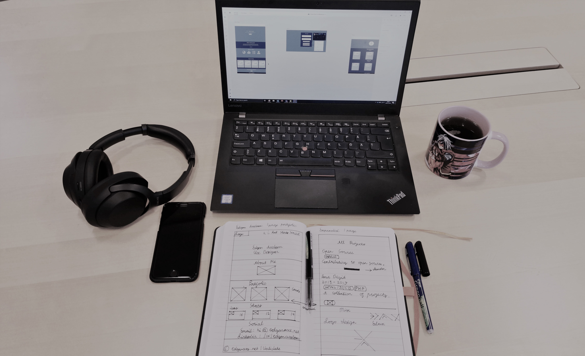

Experienced designer with an extensive working history in different areas of UX and BIM. Experience in projects ranges from small freelancing projects to large commercial projects. Strong academical background and history. Driven in the workplace to be effective, both independent and as a team player.
BIM Designer
I am currently working as a BIM Designer for Atkins Global, where my background in design is put to excellent use. I am responsible for civil engineering drawings, modeling, clash detection, technical documentation, and providing complex designs for the railway industry.
Working alongside industry-leading architects and engineers, I provide support for critical tools used in the BIM process. My design toolset specialty is in railway and civil engineering design, where I work with the latest Autodesk and Bentley Systems. My experience with these tools is reliable and broad.
If you need a complex problem solving, assistance with BIM processes, or just want to know what BIM has to offer, I can offer on-the-spot solutions to your problems!

UX Designer
UX design is something that I have worked with closely for the past 5 years. I have freelanced and I am still working on exiting UX projects daily. I have also been employed by multiple companies to solve their complex user experience design needs. I am especially skilled at E-commerce; One long-term project I worked on was for TietoEvry where I helped them achieve the idea of a one-stop-shop.
I am proud of my abilities to research user experience solutions, especially a case study I completed named Seichi Junrei. The Seichi Junrei project showcases long-term research into the "Otaku" sub-culture and applies an intuitive standard to digitally-aided tourism in Japan.
I have strong planning and prototyping skills. I have applied my abilities to create software apps and websites with powerful positive impacts on businesses and communities; from increasing the traffic of 10,000 member digital communities by 150% to enterprise UX solutions that generate millions of Swedish kronor daily. My design process consists of six strategic points.
- Understanding.
- Research.
- Analyze.
- Design.
- Launch.
- Analyze again.
I make sure that my clients are with me through the whole journey of the design cycle; I keep them involved and informed in every strategic point of the plan to ensure success. I am proficient with most Adobe UX design products, Balsamiq, Figma, Sketch, Basecamp, and lots more.

Let's connect?
On LinkedIn at /in/edgaraxelsson, or send me a email at edgar_axelsson@outlook.com.
Take me home?